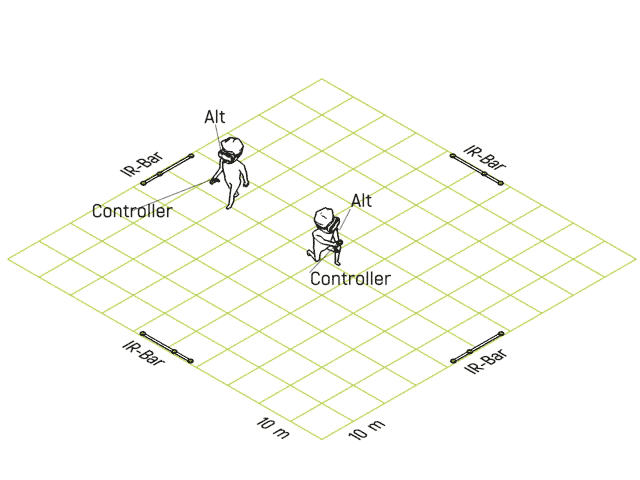
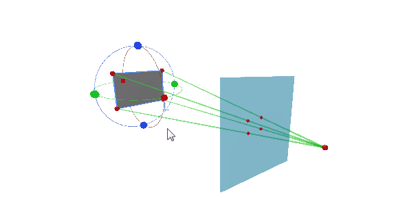
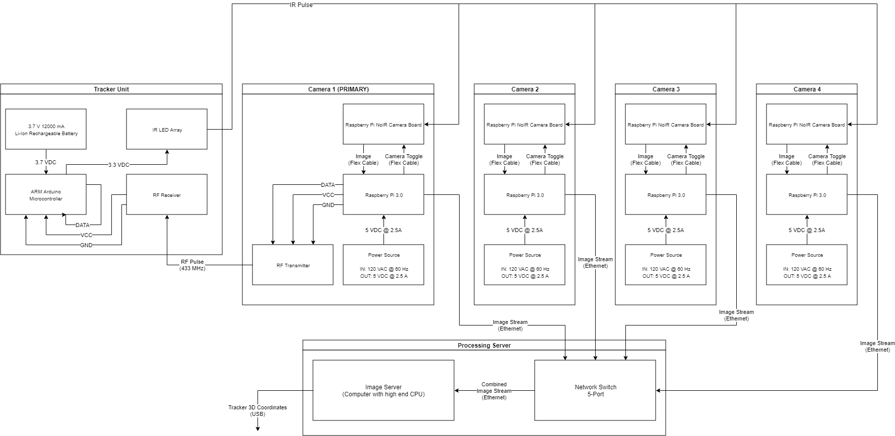
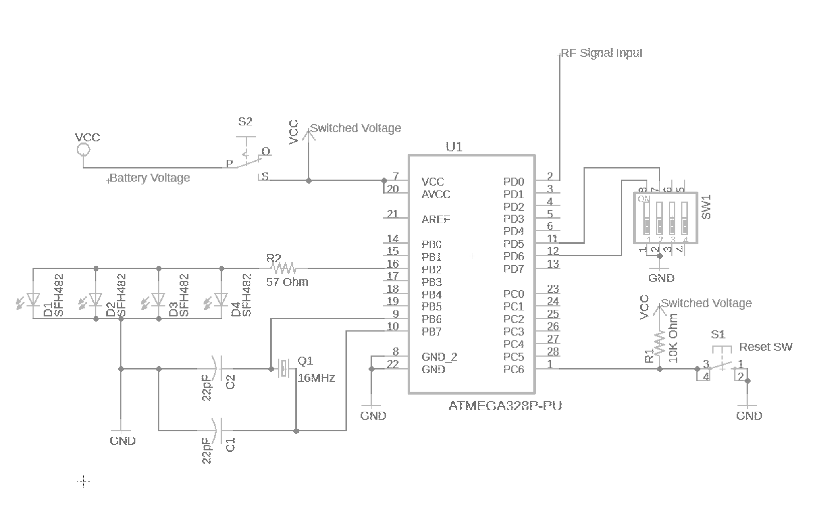

Real Time Location System
(Jan 2018 - Jun 2018)
For my capstone project in the ECE program at OSU, me and my capstone group chose to attempt to build a high-accuracy, low-latency 3D RTLS (real-time location system) for VR applications. The idea was to create a scalable RTLS which could be used to track real-world positions and movement for translation into a virtual environment.
Background
The general idea behind this project is that we, as a group, felt that current VR technology is being underutilized. While yes, it's still in its infancy, the technology has been highly marketed towards individual consumer use. I don't think this makes sense, for a few reasons.
Firstly, cost. A decent VR setup requires both a VR system and a gaming PC. A VR system on its own costs more than twice that of the average gaming console, and that isn’t even including the cost of the hardware to support it. This firmly puts VR into the realm of technical novelty, when compared to much cheaper, more ironed out forms of gaming technology.
Secondly, you have to remember that VR is intended to be the ultimate form of immersion in entertainment. Why then, would we constrain this technology to the minimal space of a typical consumer home? Current setups typically don’t allow for more than a few steps of movement from the player. Even VR arcades typically consist of multiple small “stalls” in which players are limited to.
So how do I think this technology is best applied? VR arcades. Imagine rather than a single person in a small room surrounded by tripods, a large warehouse room where a large group of people can all play within the same virtual world. My vision is something along the lines of laser tag, but within a virtual environment. However, these arcades could contain any type of game imaginable. Imagine taking paintball, escape rooms, bowling, lightsaber duels, you name it, and wrapping them all up into a single building with only the cost of a few thousand dollars worth of electronics. The possibilities are endless.
So why aren’t people doing this now? Short answer is they’re trying, but it’s complicated. Companies like Antilatency are working to add room size scalability to VR systems, and amusement parks like Disney are slowly catching on. But this idea is even newer VR itself, and VR arcades are still probably several years out. Moreover, this kind of a business requires both custom hardware and software.
That brings me back to our project. My capstone group thought that specific subject area would be an interesting and educational area to look into. So for our senior project, we chose to try to create a RTLS system that would function for such an arcade.
Overall Design & Concepts
Our objective was to create a RTLS system which met the following criteria:
|
|
Granted, we knew these were very lofty goals. However, we thought at the very least it would be educational to attempt these goals.
Originally, we were attempting to do this using RF time-of-flight (ToF) triangulation between the trackers and receivers. Essentially, if a tracker puts out a RF pulse, we can measure the difference in time that this pulse reaches receivers at the corners of the room to triangulate the location of the tracker. The problem with this idea is that the timing resolution of our receivers must be extraordinarily high in order to accurately detect position.
Very simply as shown above, with simple ToF distancing, we need a 33 picosecond resolution on timing measurements to achieve the accuracy we are looking for. This is essentially equivalent to a 30 GHz clock. In terms of purely meeting this resolution, there are some timers - such as the TDC7200 - which come close enough to be viable. In the end, we decided that RF triangulation was potentially viable long-term, but wasn't necessarily something that we could do over the course of a single semester. I'll probably keep it in mind for future tinkering on my own time though.
We also considered ultrasound as an alternative, as it functioned in pretty much the same way as RF triangulation, but required less precision (the propagation speed of sound is 100,000x slower than that of an EM pulse). However, this would require us to a simple RF transmitter in the tracker for a isotropic ultrasonic speaker. Because of this, and our lack of knowledge of acoustics and reflectometry, we decided to scrap this idea. We felt that it also was not viable over the course of a semester.
So in the end, we chose to go for the tried-and-true method of infrared tracking. We chose to go about this with perspective-projection analysis rather than multiple perspective triangulation, as is used in hollywood mocap. Again, this was primarily for budget and schedule reasons. This essentially uses an idea of the image as a projectection screen between the tracker and a focal point. Based on the known dimensions of the tracker, the distance and skew of the tracker from the camera can be determined. This allows the system to determine the position of a tracker with a single camera.
Part of the problem with with this design, however, is scalability. As additional trackers are added, the number of visible LEDs sees a linear increase. The processing to distinguish multiple trackers results in exponential processing delays with each additional tracker. We chose to approach this by by adding tracker groups. Essentially, trackers take turns activating their LEDs. This results in much faster processing times, at the cost of lower refresh rate. It is to be noted however, that the processing server needs to have enough cores to multiprocess the images in real time. Longer processing time requires more processor cores (or lower refresh rate).
(number of available cores) ≥ (number of cameras) × (processing time per image) / (refresh rate)
The system consists of three primary components: camera stations, trackers, and the image processing server. The camera stations and trackers all run in parallel to one another. In order to create tracker groups as discussed above, we had to find some way to sync the trackers and cameras together and prevent them from desynchronizing over long runtimes. We accomplished this with an RF sync pulse and careful timing analysis. When the device is activated, the primary camera station puts out a 433 MHz RF pulse, which is received by all other camera stations and trackers. When a tracker group (n) receives the pulse, it waits a set time (n*dt) and then activates its LED array for a time (dt) which is larger than the shutter speed of the cameras (set to 5 ms). When the cameras receive the pulse, they take (n) pictures at a frequency (1/dt).
The component schematic below was a first-draft blueprint for the system to be built. The only change made from this point was to add 433 MHz RF receivers to the slave camera stations. This was simply because given that the RF sync pulse was already being generated, it made sense to not have to decrease ethernet throughput by using an ethernet camera toggle.
Camera Station Design & Fabrication
Each camera station was constructed using Raspberry Pi 3.0. These were connected by ethernet back to the image processing server via a switch. A RPi NoIR camera was used to capture images. The primary camera station included a 433 MHz transmitter, and the slave camera stations were equipped with a 433 MHz receiver for the sync pulse. Additionally, to simplify the processing required, a visible light filter was placed over the camera aperture. All of this was built into a simple 3D printed case, which could be affixed either to a wall, or a specialized dynamic mounting bracket. The unit is wall powered (120 VAC).
Schematic for the camera stations
Final camerastation (slave)
The camera stations effectively functioned as a specialized IP camera. All programming for the camera stations was completed in Python. These camera stations were designed to simply take pictures to be relayed to the interface server for processing.
Tracker Design & Fabrication
The trackers were designed to use an ATmega328 MCU. This MCU was powered by a rechargeable LI-Ion battery, and was used to control timing and to activate/deactivate a small array of four IR LEDs. The tracking group number of a tracker was controlled by a set of four dip switches which gave the binary representation of the tracking group. This allows for up to 16 seperate tracking groups. The schematic for the tracker can be seen below.
The tracker was then also placed within a 3D printed case. This case allows for easy access to tracking group controls, as well as charging of the device. Final tracker design can be seen below. It is to be noted that after these images were taken, diffusers were fixed to the LED ports on the tracker. This allowed the tracker to be seen better when at angles to a camera. The programming for the MCU was first written and tested using an Arduino, and was later transferred to the ATmega328.
Final tracker internals
Final tracker case (without LED diffusers)
Image Processing Server
The image processing server was - for testing purposes - a simple laptop. This laptop was connected to the camera stations through an ethernet switch. The processing server was responsible for receiving the image stream from the camera stations and processing them to determine tracker locations.
Image processing was done as follows: first, the image was run through a Canny edge detection algorithm to simplify the image and make parsing easier and faster. Next, a Hough transform algorithm was run on the resultant Hough algorithm. This Hough algorithm was modified to only detect circles, and returned the pixel coordinates of LED centers. Both of these operations were accomplished using the OpenCV python libraries. For a more polished system, a custom Hough transform could be used to determine a more accurate center for the LEDs (perhaps percentage of image, rather than pixel location).
These 2D coordinates (projection screen) were then parsed to determine the distance of the tracker from the camera, the angle of the tracker from the camera, and optionally, the rotation of the tracker in space. These values were run through a custom algorithm to determine the 3D euclidean coordinates of the tracker in space. For demo purposes, the rotation of the tracker was not calculated, and the 3D euclidean coordinate grid.
Final Results / Performance
Latency: In the end, we were able to get our total latency to ~6 ms, which is more or less the target value. Given that the system was tested using a low-end laptop as a image processing server, and with TCP communication between the camera stations and the server, it can be said that the system very well meets the planned latency spec.
Accuracy: The final accuracy of the system came out to be ~2 inches. This is obviously much higher than was planned, but it is very much a good proof of concept. The accuracy in this type of system comes down to two things: calibration and the Hough algorithm. Firstly, our 3D positioning algorithm relied heavily on the focal length of the camera. The focal length of the camera we used was not given in spec, and we were forced to manually measure it. If given more time, we could have created a calibration routine which determines this automatically, at a much higher accuracy than our measurements. The other source of error was our Hough algorithm. We used the algorithm contained within the OpenCV library, which returns the center pixel of the LEDs. At a low resolution (like the one we were using), this adds a lot of error. A higher resolution would provide a much better accuracy. However, an alternative to this would be to use a Hough transform which produces an absolute coordinate, rather than the pixel center.
Refresh Rate: Our refresh rate was lower than planned, at ~60/(2*N) FPS for a 60 FPS camera, where N is the number of tracking groups. This was a result of us pivoting to high scalability / low running costs. Our system trades refresh rate for being highly scalable and functioning on much cheaper, less powerful computers. In the end, this was a design choice, as high scalability is much more desirable in this sort of system than refresh rate. Moreover, refresh rate can be artificially "increased" using interpolation.
Additionally, the refresh rate of the system can be increased by using a more specialized camera. High shutter speeds result in darker pictures. As a result of the visible light filter, this is not an issue for image processing, allowing us to work with shutter speeds of 5 ms for the demo. However, the reset time of the camera must also be considered. A camera with a low setup/reset time would allow the system to get significantly higher than a 60 FPS baseline.
Scalability: The system is highly scalable and customizable, and allows for the tradeoff between latency and refresh rate to be controlled by the user. For example, 16 trackers could be used in their own tracking groups, with a ~6 ms latency and refresh rate of ~2 FPS. On a higher performance computer. 16 trackers could also be handled in a single tracking group at ~60 FPS and a ~1 ms latency. Note that these values are using the low end equipment that was used in the demo. A higher end computer allows for lower base latency, and a higher end camera results in a faster base refresh rate. It should be noted that latency is a square function of number of trackers per tracker group, whereas refresh rate per tracker group is a linear function.
Unfortunately, most of the results for this project (3D coordinate maps from demos, specific test data) were lost when OSU deleted my BuckeyeBox account after I graduated. As such, there are no graphical examples of functional operation of the system.
Future Projects / Goals
All in all, this project was a valid proof of concept. I believe that given more time, this system could provide a very cheap and accessible form of 3D location tracking - for many applications, not just VR. As such, I'm very interested in looking back at this project sometime in the future and hopefully expanding on this idea. Moreover, I am very interested in putting more effort into a RF-based RTLS.